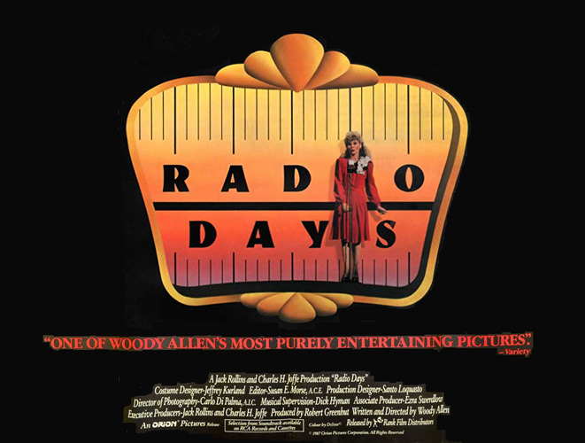
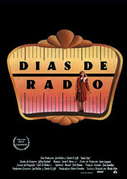
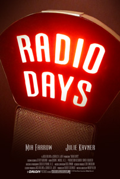
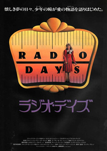

The film looks back on an American family's life during the Golden Age of Radio using both music and memories to tell the story. Joe (Woody Allen), the narrator, explains how the radio influenced his childhood in the days before TV.
The young Joe (Seth Green) lives in New York City in the late 1930s and early 1940s. The tale mixes Joe's experiences with his remembrances and anecdotes, inserting his memories of the urban legends of radio stars, and is told in constantly changing plot points and vignettes. Even though Joe's Jewish-American family lives modestly in Rockaway Beach, each member at one point during the film finds in radio shows an escape from reality through the gossip of celebrities, sports legends of the day, game shows, and crooners, with the majority of the stories taking place in the glitz and glamour of Manhattan. For Joe, the action adventure shows on the radio inspire him as he daydreams about buying a secret decoder ring, an attractive substitute teacher, movie stars (who may or may not be as honest as they appear), and World War II.
Meanwhile, several other parallel stories are told, from an aspiring radio star named Sally White (Mia Farrow), Joe's Aunt Bea (Dianne Wiest) and her (mostly fruitless) search for love, and during the middle of the film on the radio the tragic story is told about a little girl named Polly Phelps, who falls into a well near Stroudsburg, Pennsylvania. It becomes a big national story as the family listens to it. Sadly, Polly does not survive.
The opening scene in which burglars are interrupted by a phone call from a radio quiz show is based on the radio series "Stop The Band". On the show, as an orchestra played, phone calls were placed at random to anyone in the country. Listeners who answered their phones and named the familiar song being played won a small prize and the chance to identify a more difficult tune for an ever-increasing jackpot. However, the radio show began in 1948, ten years after the events in this film begin.
Also, the song sung by Frank Sinatra on screen in the scene at Radio City Music Hall, "If You Are But a Dream" (written by Moe Jaffe, Nat Bonx, and Jack Fulton), was published in 1942, after the supposed date of the event portrayed. Additionally, the particular recording used in the film dates from 1944.
"For some miraculous reason, it's a wonderful feeling having a teacher you've seen dance naked in front of a mirror."
The musical score features classic songs from the 1930s and 40s, which play an important part in the plot. Even Orson Welles's famous radio broadcast of The War of the Worlds has an important role in Bea's life.
"Childhood anecdotes and charming vignettes are set against bright-light, big-city sets, a-dazzle with beautiful players." - Rita Kempley : Washington Post
"It's a great idea for a movie, but Allen fatally opts for a Fellini Amarcord approach of formless narrative, larger-than-life coincidence, and rambling ruminations on what times there used to be." - Geoff Andrew : Time Out


